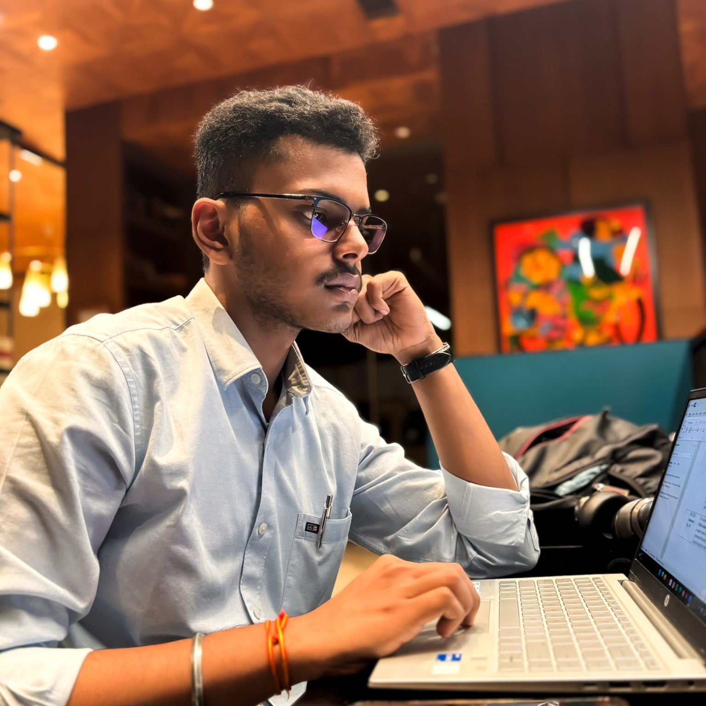
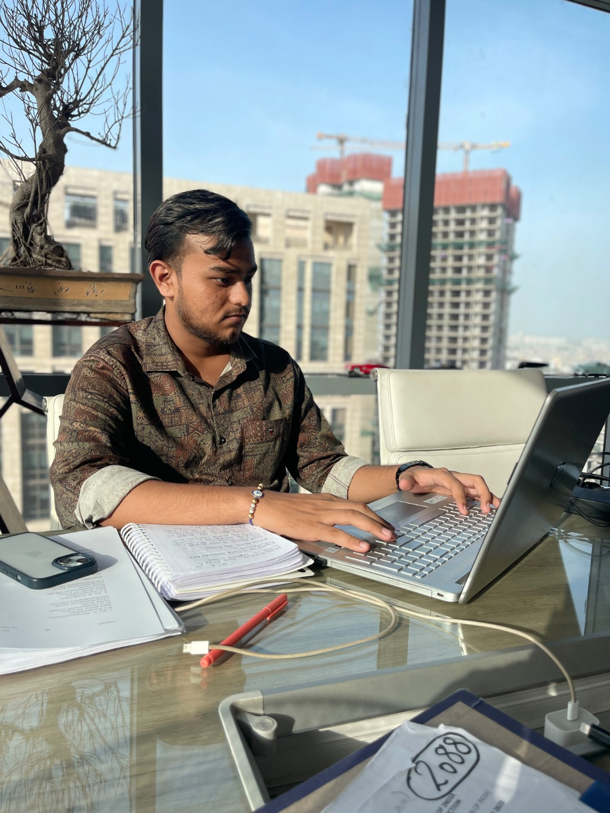

Research with purpose
Careful inquiry, relevant authorities and a clear understanding of the issue.
O&A is a collaborative initiative built around thoughtful legal research, precise drafting assistance and a wider engagement with law, institutions and society.
O&A began with a simple idea: meaningful legal work requires more than reading provisions or preparing documents. It calls for curiosity, careful research, clear communication and an understanding of the people and institutions shaped by the law.
We are a student-led, independent legal initiative bringing together our interests in research, drafting, litigation support and legal writing. Through our work, we aim to create a space where legal ideas are examined carefully and knowledge is communicated with clarity.
Our work is guided by a collaborative outlook. We seek to engage with advocates, students, researchers and others who value considered legal work and an informed exchange of ideas.
Our aim is to contribute to the legal ecosystem through dependable research and drafting assistance, organised litigation-support work and accessible legal knowledge. We want to approach each assignment with attention to detail while keeping the larger purpose of the work in view.
We also hope to build a platform for legal writing and discussion — one that encourages young legal minds to engage with contemporary developments, examine legal reasoning and share perspectives responsibly.
Careful inquiry, relevant authorities and a clear understanding of the issue.
Structured, considered and detail-oriented assistance with legal documents.
Curiosity about law, institutions and the realities that shape legal questions.
O&A is shaped by the interests, learning and work of its two founding members. Get to know the people behind the initiative.

A Law student with interests in legal research, constitutional and criminal law, litigation and legal writing. His experience includes research assignments, case analysis, drafting assistance and litigation-oriented work across chambers and legal organisations.

A law student with interests in intellectual property, arbitration, dispute resolution and legal drafting. His experience spans research and drafting assignments, trademark matters, arbitration-related work and litigation support.